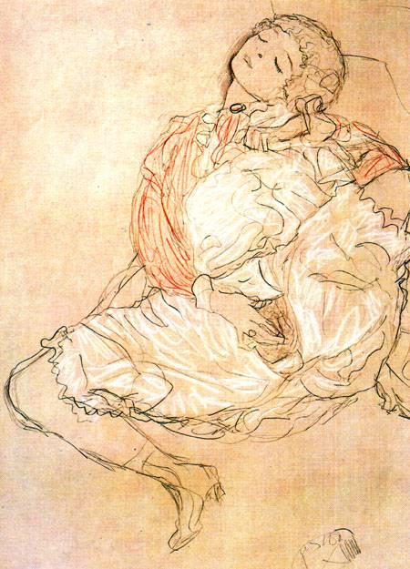

性交
性交，又称性爱、做爱、ML（英文make love之缩写），一般是指性器官接触的行为，如
- 阴茎插入阴道、
- 肛交（阴茎插入肛门）、
- 口交（以口腔内的舌头、牙齿等刺激对方性器官）、
- 指交（以指头刺激对方性器官）、
- 以其他物品（如假阴茎等）插入对方体内（如阴道、肛门等）等等。
性交的主要目的是为了获得性快感、繁殖下一代（仅阴茎插入阴道之行为，详见下文新生命一节）。所以，一般会反复刺激性器官使之发生性高潮，如阴茎—阴道性交中将阴茎反复插入、抽出。
对于阴道性交，初次性交并不一定会出血或疼痛。
风险
进行性行为的安全风险主要有：意外怀孕、性传染病感染、身体伤害和精神伤害。
若在性交时阴茎射出的精液射入女性阴道内，则有可能导致女性怀孕。此外，精液与外阴的接触也有几率使女性怀孕。男性在受到性刺激时会由尿道口分泌透明无色而略粘稠的预射精液（又作尿道球腺液，常被误认为是前列腺液），当中也含有少量精子，因此亦可有几率导致女性怀孕。
性传染病可由皮肤、体液和粘膜的接触传染，患者有时外表并无症状。
使用避孕套（又叫做安全套）是有效且便捷地防止意外怀孕、隔绝一些性传染病感染的方法，也是较为广泛应用的方法，市售避孕套一般是男性使用（套于男性阴茎），在药店或超市可以买到。作为一种医疗用品，在使用前，请仔细阅读避孕套盒内的说明书或说明文字，有较详细的使用方法和用途介绍。关于避孕套的使用步骤，可参考wikiHow的文章：
为了减少风险，与他人发生性行为时，您应当了解必要的避孕与预防性传播疾病的知识。您可以阅读本站扩展阅读部分的文章《避孕与预防性传播疾病》了解详情。
性同意
性交的原则应当是双方自愿。不要强迫他人进行性交，这是违法的行为。
《喝茶与同意》，版权所有 ©2015 Emmeline May and Blue Seat Studios，via https://vimeo.com/128105683
自慰
图 1 奥地利画家古斯塔夫·克林姆的画作《张开大腿的女人》
自慰，也作手淫，是指对自我性器官进行性刺激以达到高潮和快感的性行为。
私下地自慰并不可耻，是一种正常而自然的行为。
有许多言论认为自慰会影响心理和生理健康，但医学界普遍认为自慰是一种正常的行为。《默沙东诊疗手册》认为，只有
- 当自慰抑制了伴侣之间的性行为
- 公开场合进行
- 成为强迫性冲动行为造成困扰时
才被认为是不正常的，大约有 97％ 的男性及 80％ 的女性进行过自慰。
请注意，自慰行为仅限于在私下场合进行，在公开场合进行自慰不仅违背公德，且在许多国家或地区是违反法律的行为 [注]。
合理的自慰频率有助于身心健康。“合理”是指在自身可承受、认为对日常生活不会造成太大影响的频率。过度自慰会造成一些身体不适和健康问题。
一般地，自慰依靠手即可完成。借助性玩具或其他物品等也可增加舒适度，但是使用不当会造成风险。
女性自慰简述
女性的自慰一般以摩擦阴蒂、小阴唇附近进行，以及用手指插入阴道，进行对前壁的刺激。在第一次插入阴道时可能会破坏处女膜。处女膜一般环绕在阴道口周围，中央开口因人而异大小、形状不一，若不想损伤处女膜，应当注意力度。
阴蒂是女性最为敏感的部位，许多女性依靠对阴蒂的刺激即可达到高潮。
在一些旧的研究报告中认为阴道完全不敏感，这是错误的。事实上在阴道口附近存在着大量神经末梢，在距阴道口内部5~8厘米处可能存在着G点（格雷芬贝格点），受到刺激时会引起强烈的性快感。不过，近年来学术界就“G点”的存在存在争议。
男性自慰简述
男性通常以握住阴茎上下移动摩擦的方式自慰。对于未进行过包皮手术的男性，可以利用包皮反复刺激龟头；而对于包皮无法覆盖龟头、在自慰过程中造成龟头裸露的男性，可以采取使用润滑液或使用唾液进行润滑后摩擦，避免引起龟头疼痛。
新生命
在性交过程中，男性的阴茎受刺激而勃起变硬，从阴道口进入阴道，阴道与阴茎摩擦，在一段时间后阴茎在阴道内射精。
射精时排出含有精子的精液到阴道内，精子经过阴道及子宫颈，到达子宫或输卵管。精子与位于其内的卵细胞结合，完成受精。
受精后的卵细胞称为受精卵，成功地在子宫壁着床后，受精卵会在子宫后发育约九个月的时间，这段期间即为怀孕（妊娠）。
图 2 一名怀孕 7 个月的女性
若胎儿正常成长，最后会分娩，分娩过程包括子宫肌肉的收缩、宫颈扩张、婴儿经过产道（即阴道）从阴道口出生。
人类的婴儿和幼儿无法独立生存，需要养育十多年的时间。婴儿刚出生后，母亲乳房的乳腺就可以分泌母乳，供婴儿喂食。这种过程被称为哺乳。
本节正文内容已结束。
⭐ 你的 支持 可以鼓励知性的维护与运营。
注释
^注：据《中华人民共和国治安管理处罚法》第四十四条，“猥亵他人的，或者在公共场所故意裸露身体，情节恶劣的，处五日以上十日以下拘留”。
参考资料
版权
正文内容
详见版权许可。
图片来源
本页图片来自互联网，且均在版权合规要求下使用。
| 图片编号 | 作者 | 来源 |
|---|---|---|
| 封面 | Taisiia Shestopal | Unsplash |
| 图 1 | Gustav Klimt | 公有领域 |
| 图 2 | Isabela Martins | Unsplash |
视频来源
Tea and Consent. Copyright ©2015 Emmeline May and Blue Seat Studios.
Non-commercial use: Video must have copyright information displayed below video, with a live link to original. No alteration to the video may be made, other than translation.